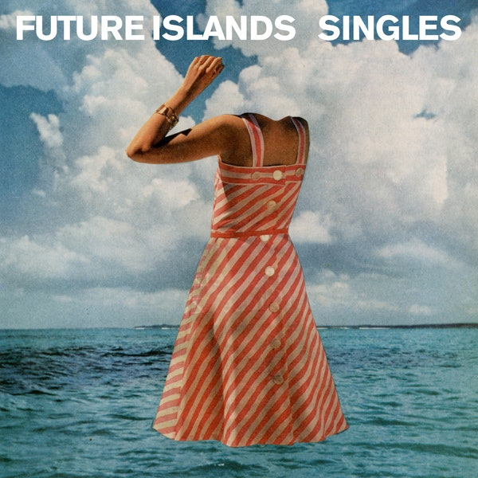
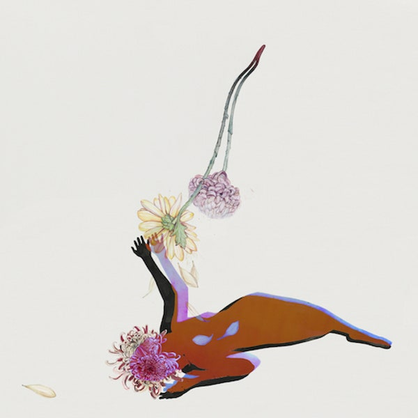

DISCOGRAPHY
This page contains informaiton on Future Islands' last three studio albums.
On the Water (2011)
Tracklist:
- On the Water (4:52)
- Before the Bridge (3:59)
- The Great Fire (3:15)
- Open (1:28)
- Where I Found You (5:44)
- Gives Us the Wind (4:06)
- Close to None (6:19)
- Balance (4:06)
- Tybee Island (3:17)
- Grease (4:35)
Singles (2014)

Tracklist:
- Seasons (Waiting on You) (3:46)
- Spirit (4:22)
- Sun in the Morning (3:48)
- Doves (3:28)
- Back in the Tall Grass (4:15)
- A Song for Our Grandfathers (4:55)
- Light House (4:47)
- Like the Moon (4:40)
- Fall from Grace (4:15)
- A Dream of you and Me (3:49)
The Far Field (2017)

Tracklist:
- Aladdin (4:13)
- Time On Her Side (3:39)
- Ran (3:26)
- Beauty of the Road (4:09)
- Cave (3:52)
- Through the Roses (3:15)
- North Star (3:35)
- Ancient Water (3:56)
- Candles (3:57)
- Day Glow Fire (3:49)
- Shadows (ft. Debbie Harry) (4:05)
- Black Rose (3:25)